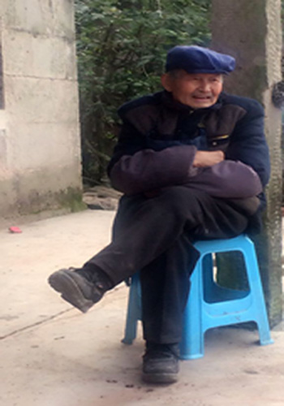
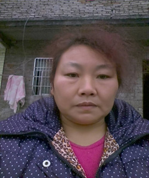
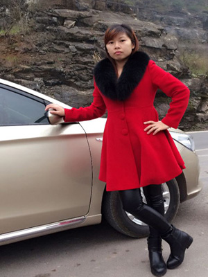
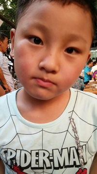

我的外公,孙永海。今年86岁,年轻的时候当过镇一级的书记,也是一个地地道道的知识分子。
我外公的爱好就是喝一点小酒,没事小酌一杯,对了还很喜欢打麻将,毕竟这是大多数国人的爱好。
外公不仅仅是一个知识分子还是一个能工巧匠,会做木匠的活,做的一手好家具,不比商店的差,质量杠杠的。
在这里我想对外公说天冷了多穿一点,多注意身体,毕竟年纪大了
胡马依北风,越鸟巢南枝。 ——《行行重行行》
人归落雁后,思发在花前。 ——薛道衡;
逢人渐觉乡音异,却恨莺声似故山。 ——司空图
唯有门前镜湖水,春风不改旧时波。 ——贺知章
《黎明》
严静的世界,灿烂的世界——
黎明的时候,谁感我醒了?
上帝啊,在你的严静光明里,
我心安定,我心安定。
我要讴歌。
心灵啊,应当醒了。
起来颂美耶和华。
琴啊,瑟啊,应当醒了。
起来颂美耶和华。
黎明的时候,
谁感我醒了,阿们。
我的爸爸
我的爸爸,杨勇,今年42岁,一个外出务工的男人,自己一个人撑起我们这个小家,虽然文化程度不高,却让我读上了大学 ;唯一的爱好就是打麻将,平时话很少,不过话语少的爸爸在我第一次高考失败后安慰我,鼓励我,让我有信心站起来,平时也说总是个妈妈打电话不给"我",对于这一点我觉得,我会慢慢改过来
父爱是一缕阳光,让你的心灵即使在寒冷的冬天也能感到温暖如春;父爱是一泓清泉,让你的情感即使蒙上岁月的风尘依然纯洁明净。父爱像一本厚重的书,耐人寻味;父爱像一杯甘醇的酒,回味无穷。
我的妈妈

我的妈妈,孙素蓉,一个典型的家庭主妇,一个人把家管理的仅仅有条,妈妈会烧的一手好菜,我记得我最爱吃的就是红烧排骨、油炸豆腐,这些菜让我回味无穷,不过我感觉妈妈有点着急,每当我去学校,妈妈比我还急,哈哈哈,这就是关心,我记得在小时候我不小心把手摔脱臼了,妈妈独自背着我去求医,这就是爱,让人久久铭记
母爱是温热的太阳,奉献着她的光芒;是辽阔的海洋,袒露着宽广的胸怀;是一片肥沃的土壤,哺育着儿女茁壮地成长母爱的伟大在于母爱的无私母爱是困难中的一根拐杖,当你脚步蹒跚经典美文欣赏时,帮助你找好重心,支撑起一片希望的原野。
我的姐姐

我的姐姐,一个平平淡淡的人,我舅舅的女儿,比我大10几岁,没事玩一下全民k歌,时不时发一下自己唱的歌曲,说实话唱的很不错哦,我也是粉丝哦。我感觉在我印象中我跟我的表姐关系更好,感觉比我其他姐姐,或者哥哥要跟亲近,更有亲人的感觉,就连高考志愿也是在我姐姐家填的自愿;不过性子有点急,我觉得这一点可以改一改。嘻嘻嘻嘻
亲人就是冬日里的阳光,能给你温暖;亲人就是沙漠里的绿洲,能给你希望;亲人就如甘霖,能给你盼望。
我的弟弟
 我的弟弟,杨祎晨,今年7岁,不过身高已经140了,这是我比我高的节奏呀;
不过他才刚刚开始读小学,一天很贪玩,每天必看动画片,没有动画,感觉他的世界就少了许多颜色
不过我觉得每当我回去了他就很高兴,因为我会给他买零食,哈哈哈
有时候还是会跟他打打闹闹,一不小心就会把它弄哭
说到哭,我有很多话说,他跟我一样,小时候都喜欢哭,不过他一下就不哭了这是很值得表扬的.
这就是我的弟弟,一个调皮鬼
现在在读一年级,每当我回家的时候他总是拿出他考得好的卷子个我看,总是表现出得意样子。